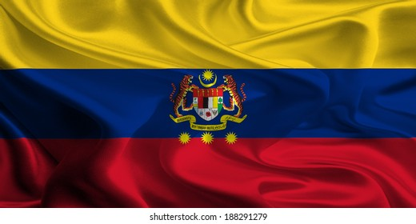
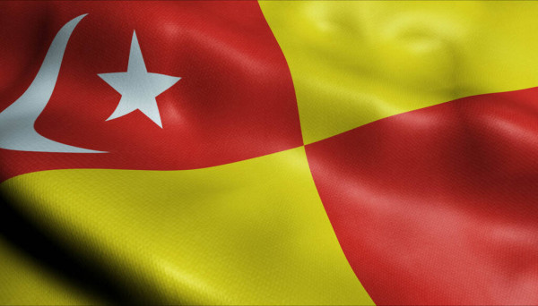
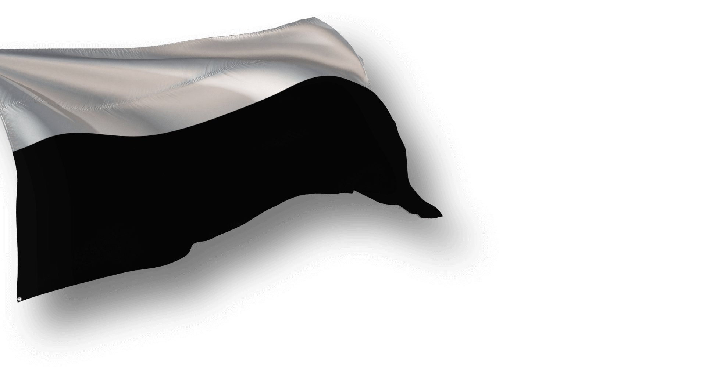

MALAYSIA TRAVELOG
DETAILS ABOUT THE PLACES!
KUALA LUMPUR
|  | Kuala Lumpur is Malaysia's capital city, with gleaming skyscrapers, colonial architecture, charming locals, and a plethora of natural attractions. This Kuala Lumpur area which covers a land area of 244 km2 (94 bt2), is inhabited by 1.796 million people according to the 2018 census. This city is connected to the outside world by two airports, namely Kuala Lumpur International Airport (KLIA) in Sepang and Sultan Abdul Aziz Shah Airport which currently only serves domestic flights. |
|---|
SELANGOR DARUL EHSAN
| The state of Selangor is one of the thirteen states that make up Malaysia . It is located in the heart of Peninsular Malaysia on the west coast and surrounds the Federal Territory of Kuala Lumpur and Putrajaya. The state is also bordered by Perak to the north, Pahang to the east, Negeri Sembilan to the south and the Straits of Malacca to the west.It is also the richest, with a large share of the nation's industry and commerce concentrated there. Selangor completely encircles the Federal Territories of Kuala Lumpur and Putrajaya, which were built on land that once belonged to Selangor. |  |
|---|
PAHANG DARUL MAKMUR
|  | Pahang is the third largest state in Malaysia . Located in the vast basin of the Pahang River, the state of Pahang is bordered by Kelantan to the north, Perak, Selangor and Negeri Sembilan in the west Johor in the south and Terengganu and the South China Sea to the east.Pahang is Peninsular Malaysia's largest state, with a diverse range of environments ranging from the Titiwangsa Range's montane forests to lush rainforests, beaches, and islands. Pahang is easily accessible from Kuala Lumpur due to the existence of a freeway that extends all the way to Kuantan, the state capital. |
|---|
KELANTAN DARUL NAIM
| Kelantan is known as the "cradle of Malay culture" because it has a large Malay population (93 percent) and the rest is made up of Chinese, Indians, and Thais. Kelantanese customs, traditions, and cultures have been well preserved over the years. Some of their most memorable activities include flying giant 'Wau' kites and playing 'Gasing,' a spinning top game.Kelantan is a state of 13 states in Malaysia that is rich in local natural resources. Has an area of approximately 14,922 km², located in the northeast of Peninsular Malaysia , facing the South China Sea , and bordering the State of Narathiwat , Thailand (see map). Kelantan is an agrarian (agricultural) state with many paddy fields and fishing villages. |  |
|---|
TERENGGANU DARUL IMAN
 |
Terengganu is one of the states in Malaysia . Terengganu is located on the East Coast of Peninsular Malaysia . It is located between longitude 102.25 and 103.50 and latitude 4 to 5.50 (see map) . In the north and northwest, Terengganu borders Kelantan while in the south and southwest, Terengganu borders Pahang . The area of the state of Terengganu is 12,955 km 2 .Terengganu, Malaysia's easternmost state, has a view of the South China Sea. Terengganu is a charming holiday destination with beautiful beaches and even more spectacular islands. Every year, many turtle species such as Olive Ridleys and Leatherbacks come to nest on its beaches, earning it the nickname "Land of Turtles." |
|---|
MELAKA
| The state of Melaka is located on the southwest coast of Peninsular Malaysia, as well as opposite Sumatra . Covering an area of 1,650 square kilometers, it borders Negeri Sembilan to the north and Johor to the east. Pulau Besar is also included in the state border. The total population of Melaka in 2001 was 648,000.Melaka's tourism industry has enormous potential because the state is known for its well-preserved culture and heritage. |  |
|---|
JOHOR DARUL TAKZIM
 |
Johor was originally known as 'Ujong Tanah,' which translates to 'Land's End.' Johor derives its current name from an adaptation of the Arabic word 'Jauhar,' which means precious stone or jewel. Johor has land borders with the states of Malaysia Pahang in the north and Melaka and Negeri Sembilan in the northwest. The Johor border is the maritime border with Singapore in the south and Indonesia in both the west and east. |
|---|
PULAU PINANG
| Penang Island is well-known for its UNESCO World Heritage site at Georgetown, as well as its hawker food and pristine beaches.Penang is also the state with the majority Chinese population in Malaysia. Here is also the main Chinatown of Malaysia. The Penang Bridge Run is also organized every year in Penang. The journey is to go and turn back on the bridge the clock starts early in the morning. |  |
|---|
KEDAH DARUL AMAN
 |
Kedah is located in northern Malaysia, close to the Thai border, and is known as the "rice bowl" of Malaysia, producing half of the country's rice. Aside from its agricultural importance to Malaysia, it is also home to one of Malaysia's most popular islands, Langkawi Island. is a state of Malaysia, located in the northwestern part of Peninsular Malaysia. The state covers a total area of over 9,000 km2, and it consists of the mainland and the Langkawi islands. The mainland has a relatively flat terrain, which is used to grow rice, while Langkawi is an archipelago, most of which are uninhabited islands. |
|---|
PERAK DARUL RIDZUAN
| Perak is the second largest state in Peninsular Malaysia after Pahang , and the fourth largest in Malaysia. Perak is bordered by states such as Kedah , Penang on the west side of the mainland; Kelantan in the northeast; Pahang in the east, and southeast; Selangor in the south and the Straits of Melaka in the west. The state of Perak also has an international border with Thailand (or Yala Province ), to the north and the island of Sumatra , Indonesia to the southwest.The historic towns of Ipoh (Perak's capital), Taiping, and Batu Gajah have some fine heritage buildings and places of interest, while Kuala Kangsar, the Royal town, has some interesting palaces, museums, and mosques to admire. |  |
|---|
PERLIS
 |
Perlis or also known by its popular honorific title Perlis Indera Kayangan is the smallest state in Malaysia by area and population. Perlis is Malaysia's smallest state, bordering Thailand to the north of Peninsular Malaysia. Perlis is a peaceful state with friendly people, known for its limestone hills and fresh seafood. |
|---|
NEGERI SEMBILAN DARUL KHUSUS
| It is a state in Malaysia located on the west coast of Peninsular Malaysia and borders Selangor on the north, Pahang on the east, Johor on the southeast and Melaka on the south.The capital is Seremban . Bandar Diraja is Seri Menanti which is located in the district of Kuala Pilahin the middle of the country. The state is the fifth smallest in Malaysia (10th place), as well as in the Peninsula (8th place), and has the third smallest population (12th place) in Malaysia, and in the Peninsula (10th place).There are some small mountains to hike in Negeri Sembilan. It is home to the country's most popular beach resort, as well as numerous historic sites, museums, parks, and other attractions |  |
|---|
SABAH
 |
Sabah is one of the provinces in Malaysia located in the northern part of the island of Borneo , the capital of Sabah is Kota Kinabalu, formerly known as Jesselton. Sabah is also often referred to as the " State Under the Wind " because of the region's very strategic position under the monsoon wind route and has never been hit by hurricanes, except for a few small scale tropical storms. Sabah is famous for Mount Kinabalu which has become a major symbol of the region. Compared to the states in Malaysia, Sabah is the second largest state in the Federation of Malaysia.Sabah is endowed with natural diversity, distinct cultures, exciting adventure, beautiful beaches, and fantastic cuisines for the adventurous palate. We have it all, from the world's largest flower, the Rafflesia, to one of South East Asia's highest mountains, Mount Kinabalu, and one of the world's best dive sites, Sipadan Island. |
|---|
SARAWAK
| Sarawak is the largest region in Malaysia . Prior to the formation of the Federation of Malaysia, Sarawak was independent of British colonial rule on 22 July 1963. Initially, Sarawak was a province that merged with Sabah , Singapore and Malaya to form a Federation known as the Federation of Malaysia on 16 September 1963. Due to economic problems and politics, the idea of merger was accepted by the people of Sarawak. Sarawak has the largest area in Malaysia. Sarawak, Labuan and Sabah are known as East Malaysia Sarawak specialises in the export of oil and gas, timber, and oil palms due to its natural resources, but it also has strong manufacturing, energy, and tourism sectors. It has a diverse ethnic, cultural, and linguistic makeup, with major ethnic groups such as Iban, Malay, Chinese, Melanau, Bidayuh, and Orang Ulu. |  |
|---|